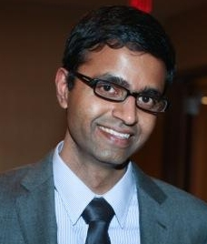

|  |
Siddhartha Srinivasa [@siddhss5]Finmeccanica Associate Professor in Computer ScienceThe Robotics Institute Carnegie Mellon University Administrative Assistant: Keyla Cook |
I work on manipulation. My goal is to enable robots to robustly and gracefully interact with the world to perform complex manipulation tasks in uncertain, unstructured, and cluttered environments. I want to make this interaction faster, safer, elegant, and involve simpler actuation. To this end, I founded and direct the Personal Robotics Lab, co-direct the Manipulation Lab, and lead the HERB effort of the QoLTbots systems area and the Mobile Manipulation effort of the Mobility and Manipulation Thrust at the Quality of Life Technologies NSF ERC.
I am currently focussing on two topics: Physics-based Manipulation and The Mathematics of Human-Robot Interaction. They are heavily intertwined, both born out of the goal of robots performing complex manipulation tasks with and around people.
Physics-based Manipulation: I focus on using physics in the design of actions, algorithms, and hands for manipulation:
The Mathematics of Human-Robot Interaction: I focus on formalizing Human-Robot Interaction principles using machine learning, motion planning, and function gradient algorithms:
I am also interested in Manipulation Planning: extending randomized planners to constraint manifolds and Perception for Manipulation: my group has developed MOPED: an efficient object recognition and pose estimation system for manipulation.
I received a B.Tech in Mechanical Engineering from the Indian Institute of Technology Madras in 1999, where I worked with Roddam Narasimha on applying wavelet transforms to Navier-Stokes equations to detect coherent structures in jet flow. I recieved my MS in 2001 and PhD in 2005 from the Robotics Institute at Carnegie Mellon University, where I worked with Mike Erdmann and Matt Mason at the Manipulation Lab. For my MS thesis, I built the Mobipulator, a desktop manipulator that used its wheels to manipulate everyday objects. For my PhD thesis, I built robust controllers for dynamic manipulation under Coulomb friction. I founded the Personal Robotics Lab (PRL) in 2006 where my students and I are developing perception, planning, and learning algorithms that enable robots to accomplish useful manipulation tasks in dynamic and cluttered indoor environments. I was also a Senior Research Scientist at Intel Labs Pittsburgh from 2006-11 where I started and led Intel's research efforts in robotics.
| Shervin Javdani | PhD Robotics (+Drew Bagnell) | 2011- | Learning Policies for Shared Autonomy |
| Jennifer King | PhD Robotics | 2012- | Robust Rearrangement Planning using Nonprehensile Interaction |
| Michael Koval | PhD Robotics (+Nancy Pollard) | 2012- | Robust Manipulation via Contact Sensing |
| Zita Marinho | PhD Robotics (+Geoff Gordon) | 2012- | |
| Matthew Klingensmith | PhD Robotics (+Michael Kaess) | 2013- | Articulated 3D SLAM |
| Christopher Dellin | PhD Robotics | 2013- | Efficient Manipulation Task Planning via Reuse-Informed Optimization of Planning Effort |
| Laura Herlant | PhD Robotics | 2013- | |
| Stefanos Nikolaidis | PhD Robotics | 2014- | |
| Gilwoo Lee | PhD Robotics (+Matt Mason) | 2015- | |
| Shushman Choudhury | MS Robotics | 2015- | |
| David Butterworth | MS Robotics | 2015- |
| Anca Dragan | PhD Robotics | 2009-15 | Legible Robot Motion Planning | Assistant Professor, Berkeley |
| Mehmet Dogar | PhD Robotics | 2008-13 | A Framework for Manipulation in Cluttered Environments | Assistant Professor, Leeds |
| Alvaro Collet | PhD Robotics (+Martial Hebert) | 2009-12 | Lifelong Robotic Object Perception | Researcher, Microsoft |
| Dmitry Berenson | PhD Robotics (+James Kuffner) | 2006-11 | Constrained Manipulation Planning | Assistant Professor, WPI |
| Aaron Walsman | M.S Robotics | 2013-15 | ROCK: Robust Object Constellation for Kinematic Pose | PhD, UW |
| Elizabeth Cha | M.S Robotics (+Jodi Forlizzi) | 2012-14 | Perceived Robot Capability | PhD, USC |
| Christopher Dellin | M.S Robotics | 2009-12 | Configuration Space Geometry of Multi-Object Manipulation | Robotics Engineer, NREC CMU |
| Kyle Strabala | M.S Robotics | 2010-12 | Learning the Communication of Intent Prior to Physical Collaboration | Robotics Engineer, NREC CMU |
| Alvaro Collet | M.S Robotics (+Chris Atkeson) | 2007-09 | MOPED: Object Recognition and Full Pose Registration from a Single Image for Robotic Manipulation | PhD, CMU |
| Garratt Gallagher | M.S Robotics (+Drew Bagnell) | 2007-09 | GATMO: A Generalized Approach to Tracking Movable Objects | Startup: Garrbotics and Bilibot |
| Martin Herrmann | M.S Universitat Karlsruhe (+Uwe Hanebeck) | 2009 | Active Scene and Object Reconstruction for Robotic Manipulation from Vision and Laser | Researcher, TU Braunschweig |